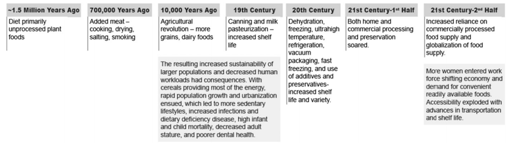
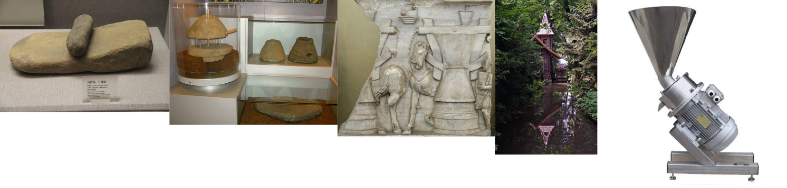
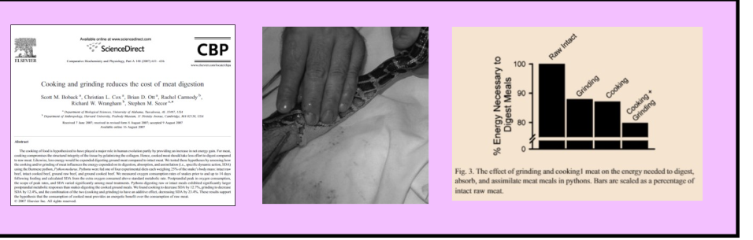

Food Technology I:
Science, Art, Design
Dr Shane V Crowley
Press down for controls and right to progress
Interacting with the Slides
📺Full screen: press the F key
🎮View video controls: hover cursor over video
👩🎨 Draw: click icon or press C
🌈Pen colour: press X to cycle and Y to revert
💁 Options and Info: click icon or press M
Video is uploading (slowly) - apologies for the delay
Famine seems to be the last,
the most dreadful
resource of nature
- Thomas Malthus
This is technology
... and this
... and this too 😕
Technology comes from the Greek techne, which means an art or skill applied to obtain a specific objective within a given context
Observations from your Exams
- "Technology is computers and the internet"
- "Technology is made with metals and wires"
🧰
Evolution of Technology

Tech evolves and stays the same

The Cooking Hypothesis

Malthusianism
- Belief in limits in population growth
- Pessimism regarding food supply
- Ignores possibilities in tech growth
Debate between techno- optimists and pessimists continues
Next week
More on food technology
shane.crowley@ucc.ie